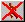
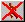
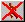

Cancel Run or clicking  during a run stops both Scenario Mode and Monte Carlo Mode runs. In addition, the Monte Carlo window includes a "Cancel Run" button to stop Monte Carlo Mode runs. Monte Carlo Mode runs may take a while to stop processing.
Cancel Run or clicking  during a run stops both Scenario Mode and Monte Carlo Mode runs. In addition, the Monte Carlo window includes a "Cancel Run" button to stop Monte Carlo Mode runs. Monte Carlo Mode runs may take a while to stop processing.
Selecting RunCancel Run or clicking  during a run stops both Scenario Mode and Monte Carlo Mode runs. In addition, the Monte Carlo window includes a "Cancel Run" button to stop Monte Carlo Mode runs. Monte Carlo Mode runs may take a while to stop processing.